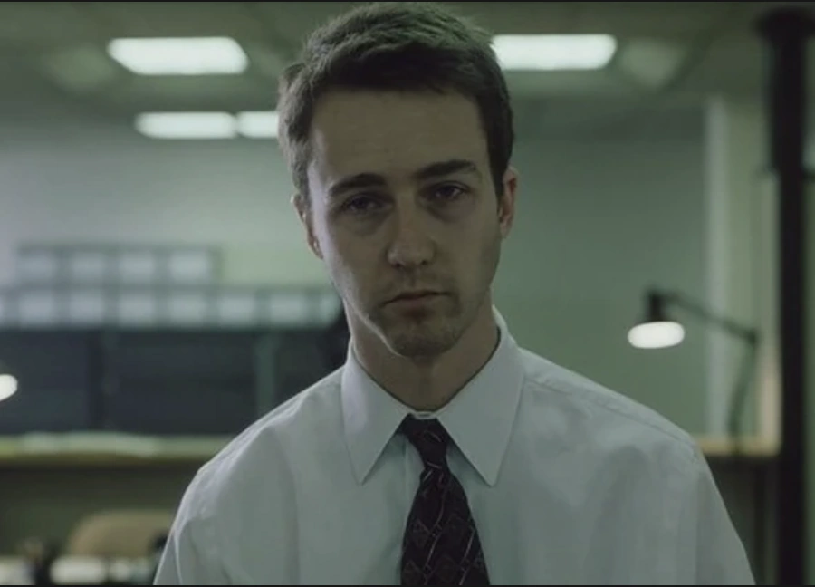

Labas as dovydas stareika/GNG.
Dovydo Štareikos Biografija
Only the strong survive
1 Tylus rytas kalnuose, Rūkas dengia pušis. Upė tyliai šnabžda, Saulė kyla iš miglos. Viskas ramiai laukia dienos. 2 Kalnų viršūnės kyla aukštai, Snieguotos, tyliai stebi dangų. Tarp akmenų – vyšnių žiedai, Rožiniai, lyg svajonė blanki. Vėjas švelniai juos neša, Žiedlapiai krinta į upę, O siela klajoja kalnuose, Tarp žiedų ir debesų, Ieškodama amžinos ramybės. ©Ts_i8